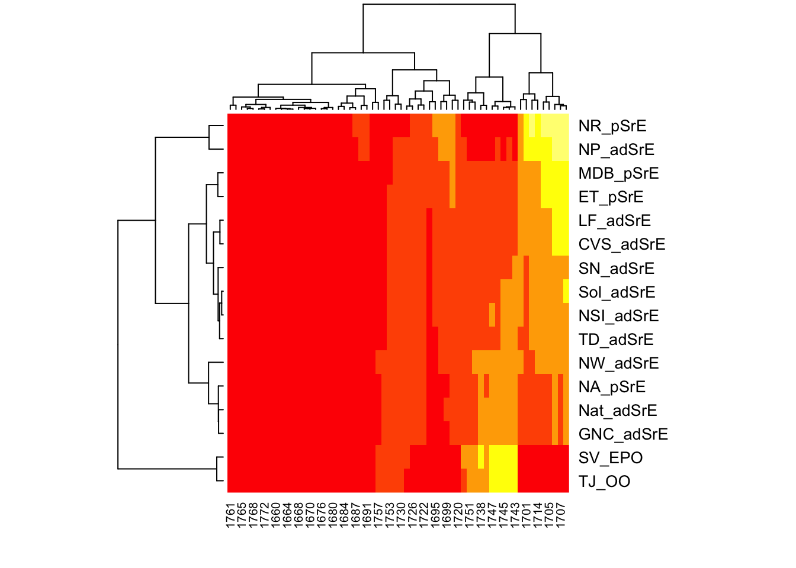

Spectral Heatmaps
Most everyone is familiar with heatmaps in a general way. It’s hard not to run into them. Let’s consider some variations:
- A heatmap is a 2D array of rectangular cells colored by value. Generally, the rows and columns are ordered in some purposeful manner. These are very commonly encountered in microarrays for example.
- An image is a type of heatmap in which the ordering of the rows and columns is defined spatially – it would not make sense to reorder them. This kind of data arises from the physical dimensions of a sensor, for instance the sensor on a digital camera or a raman microscope. An image might also arise by a decision to subset and present data in a “square” format. An example would be the topographic maps provided by the US government which cover a rectangular latitude/longitude range. This type of data can also be presented as a contour plot. See the examples in
?imagefor image and contour plots of the classic Maunga Whau volcano data, as well as an overlay of the contours on the image plot. - A chloropleth is a map with irregular geographic boundaries and regions colored by some value. These are typically used in presenting social or political data. A chloropleth is not really a heatmap but it is often mis-characterized as one.
These three types of plots are conceptually unified in that they require a 3D data set. In the case of the heatmap and the image, the underlying data are on a regular x, y grid of values; mathematically, a matrix. The row and column indices are mapped to the x, y values, and the matrix entries are the z values. A chloropleth can be thought of as a very warped matrix where the cells are not on a regular grid but instead a series of arbitrary connected paths, namely the geographic boundaries. There is a value inside each connected path (the z value), but naturally the specification of the paths requires a completely different data structure. An intermediate type would be the cartogram heatmap described by Wilke.
Heatmaps in Spectroscopy
The hmapSpectra function in ChemoSpec displays a heatmap to help you focus on which frequencies drive the separation of your samples.1 We’ll use the example from ?hmapSpectra which uses the built-in SrE.IR data set. This data set is a series of IR spectra of commercial Serenoa repens oils which are composed of mixtures of triglycerides and free fatty acids (see ?SrE.IR for more information). Thus the carbonyl region is of particular interest. The example narrows the frequency range to the carbonyl region for easy interpretation. Let’s look first at the spectra.
Note: rather than link every mention of a help page in this post, remember you can see all the documentation at this site.
Loading required package: ChemoSpecUtils
As of version 6, ChemoSpec offers new graphics output optionsFor details, please see ?GraphicsOptions
The ChemoSpec graphics option is set to 'ggplot2'To change it, do
options(ChemoSpecGraphics = 'option'),
where 'option' is one of 'base' or 'ggplot2' or'plotly'.data(SrE.IR) # load the data set
# limit to the carbonyl region
IR <- removeFreq(SrE.IR, rem.freq = SrE.IR$freq > 1775 | SrE.IR$freq < 1660)
plotSpectra(IR, which = 1:16, lab.pos = "none")
The blue and green spectra are samples composed only of triglycerides, and hence the ester carbonyl is the primary feature. All other samples are clearly mixtures of ester and carboxylic acid stretching peaks. And now for the heatmap, using defaults:

In this default display, you’ll notice that the rows and column labels are indices to the underlying sample names and frequency list. This is not so helpful. The color scheme is not so exciting either. hmapSpectra uses the package seriation which in turn uses the heatmap.2 function in package gplots. Fortunately we can use the ... argument to pass additional arguments to heatmap.2 to get a much more useful plot.
Customizing the hmapSpectra Display
# Label samples and frequencies by passing arguments to heatmap.2
# Also make a few other nice plot adjustments
res <- hmapSpectra(IR,
col = heat.colors(5),
row_labels = IR$names, col_labels = as.character(round(IR$freq)),
margins = c(4, 6)
)
This is a lot nicer plot, since the rows are labeled with the sample names, and the columns with frequencies. Note that not every column is labeled, only every few frequencies. If you need the actual frequencies, which you probably will, they can be obtained from the returned object (res in this case; see the end of this post for an example).
Interpreting the Plot
How do we interpret this plot? This is a seriated heatmap, which means the rows and columns have been re-ordered according to some algorithm (more on this in a moment). The ordering puts the frequencies most important in distinguishing the samples in the upper left and lower right (the yellow regions). In the lower right corner, we see the two outlier samples TJ_OO and SV_EPO grouped together. On the frequency axis, we see that ester stretching peaks around 1740 \(\mathrm{cm}^1\) are characteristic for these samples. In the upper left corner, we see several samples grouped together, and associated with the fatty acid carboxylic acid peak around 1710 \(\mathrm{cm}^1\). From these two observations, we can conclude that these two peak ranges are most important in separating the samples. Of course, in this simple example using a small part of the spectrum, this answer was already clear by simple inspection. Using a simple/limited range of data helps us to be sure we understand what’s happening when we try a new technique.
Using a Different Distance Measure & Seriation Method
The default data treatments for hmapSpectra are inherited from hmap in package seriation. The default distance between the samples is the Euclidean distance. The default seriation method is “OLO” or “optimal leaf ordering”. The full list of seriation methods is described in ?seriate. There are more than 20 options. As with the display details, we can change these defaults via the ... arguments. Let’s use the cosine distance (the same as the Pearson distance), and seriate using the Gruvaeus-Wainer algorithm (there’s a brief explanation of this algorithm at ?seriate).
cosine_dist <- function(x) as.dist(1 - cor(t(x)))
res <- hmapSpectra(IR,
col = heat.colors(5),
row_labels = IR$names, col_labels = as.character(round(IR$freq)),
margins = c(4, 6),
distfun = cosine_dist,
method = "GW"
)Registered S3 method overwritten by 'gclus':
method from
reorder.hclust seriation
You can see that using different distance measures and seriation algorithms gives a rather different result: the ester “hot spots” which were in the lower right corner are now almost in the lower left corner. Which settings are best will depend on your data set, the goal of your analysis, and there are a lot of options from which to choose. The settings used here are simply for demonstration purposes, I make no claim these settings are appropriate!
Finally, if you want to capture the re-ordered frequencies, you can access them in the returned object:
[1] 1767 1765 1763 1761 1759 1757 1755 1753 1751 1749 1747 1745 1743 1741 1740
[16] 1738 1736 1734 1732 1730 1768 1774 1770 1772 1728 1726 1724 1722 1720 1718
[31] 1716 1714 1713 1711 1709 1707 1705 1703 1701 1699 1697 1695 1693 1691 1689
[46] 1687 1660 1664 1666 1678 1680 1686 1682 1676 1674 1672 1662 1668 1670 1684Footnotes
Other functions in
ChemoSpecthat can help you explore which frequencies are important areplotLoadings,plot2LoadingsandsPlotSpectra.↩︎
Reuse
Citation
@online{hanson2020,
author = {Bryan Hanson},
title = {Spectral {Heatmaps}},
date = {2020-04-25},
url = {http://chemospec.org/posts/2020-04-25-Heatmaps/2020-04-25-Heatmaps.html},
langid = {en}
}